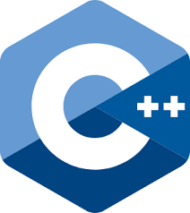

HTML-Hyper Text Markup Language is a programming language used for creating websites and webpages
in the World Wide Web(www.com). It is one of the world's most popular programming language.
I have about two years experience in the language and I can testify it is an interesting language.
CSS 3
CSS-Cascadinng Style Sheet is a programming language used in designing webpages.
It adds flesh to the HTML file of a webpage. It can be used to format A webpages' background color, text color, font size, font type and so on.
A webpage without CSS is considered boring.
Bootstrap 5
Bootstrap is another programming language used in website development. It is used to create reponsive websites.
A responsive website is a website that has an excellent view in laptops, mobile phones, tablet computer and palmtops.
C++

C++ is an object-oriented programming language designed by Bjarne Stroustrup. It is an extension of C programming Language.
It is used in solving problems in different disciplines like mathematics, algorithms, sorting, game production and many other problems.
It is a popular programming language used in all most all aspects.